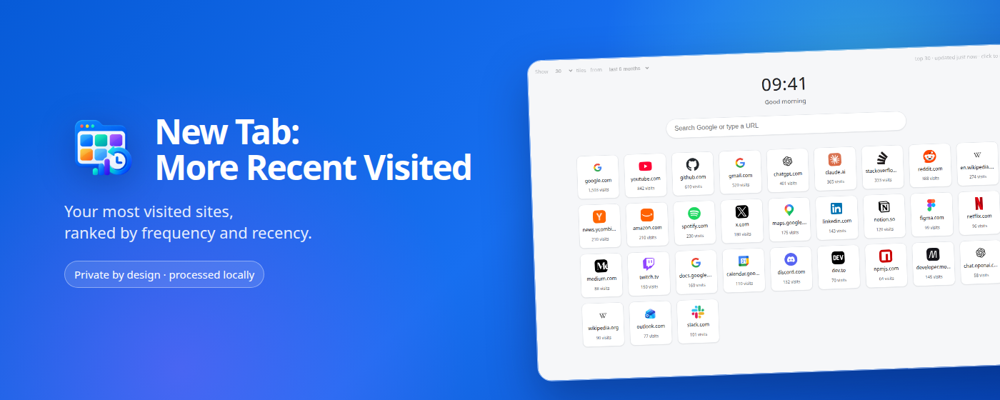
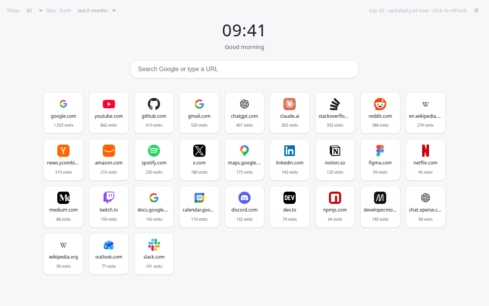
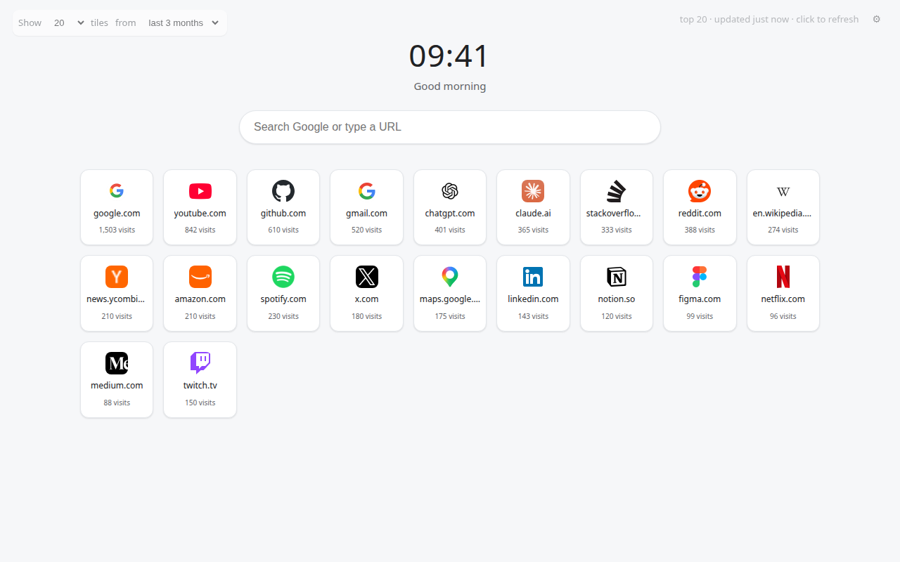
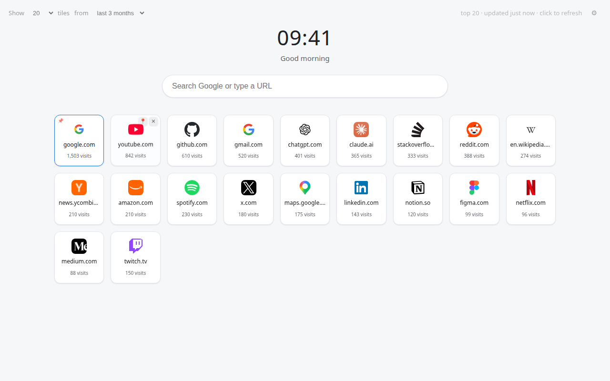
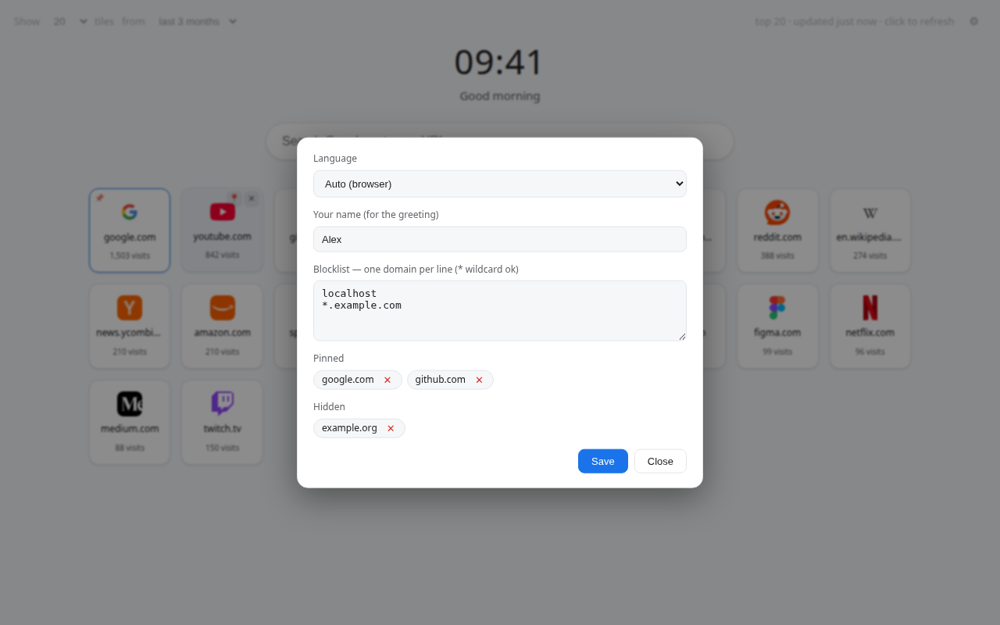
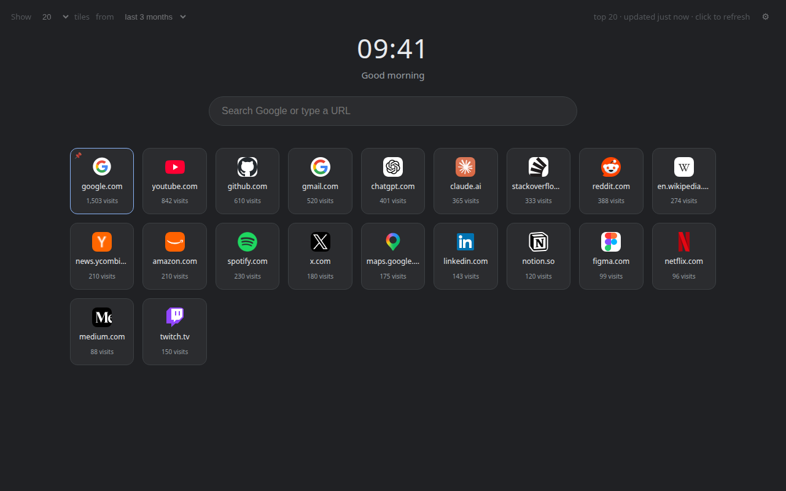

New Tab:
More Recent Visited
A clean Chrome new tab that automatically ranks the websites you visit most frequently and recently—computed entirely on your device.
A clean Chrome new tab that automatically ranks the websites you visit most frequently and recently—computed entirely on your device.

No feeds, no sponsored shortcuts, no dashboard clutter.
Sites you visit often—and have used lately—rise to the top. No manual organizing.
Pin the sites that matter, hide the ones you don't want to see.
Show 12 to 100 shortcuts. Rank by the last month, year, or all time.
Block individual domains or wildcard patterns you never want ranked.
Search Google or type a URL directly from the new tab.
Automatic appearance that follows your system theme.
Localized across all Chrome-supported languages.
Fast local caching means every new tab opens immediately.
Every screen is generated locally from your own history.





Your browsing history is processed entirely inside Chrome. It is never uploaded or sent to the developer. There are no accounts, ads, analytics, or external tracking.
Read the full privacy policy